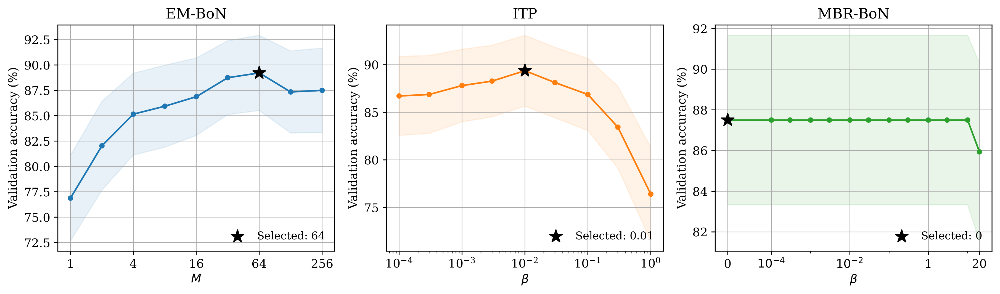

Project report
An Empirical Study of Reward Overoptimization Mitigation Strategies in Best-of-N
When does regularization help? Evidence across reward model qualities
A head-to-head comparison of MBR-BoN, χ²-BoN and EM-BoN against vanilla BoN.
Abstract. Best-of-N (BoN) sampling returns the response that a proxy reward model scores highest among N samples. It is known to overoptimize: as N grows, the proxy score keeps rising while true quality stalls or falls. Recent papers propose several training-free fixes: a similarity regularizer (MBR-BoN), a χ²-pessimistic target (χ²-BoN), and top-quantile selection with an EM-divergence regularizer (EM-BoN). Each is evaluated against vanilla BoN under its own gold metric, reward model and range of N, so the methods have not been compared against each other. This project compares all three, plus vanilla BoN, under one protocol: a shared response pool, a weak and a strong proxy reward model, and one gold metric per task. It also tests two predictions of Sriraman & Block's theory.
1. Introduction
Best-of-N sampling is the simplest way to spend inference-time compute on alignment. Draw N responses from a reference model πref, score each with a proxy reward model r̂, and return the highest-scoring one: y1, …, yN ~ πref(· | x) and ŷ = argmaxi r̂(x, yi). It needs no training and works with black-box models. Its weakness is that r̂ is only a proxy for the true reward r⋆. The larger N is, the more the selected response is chosen for the places where r̂ is wrong, so the proxy score keeps climbing while true quality plateaus or declines (Figure 1). This is reward overoptimization (Gao et al., 2023).

One point matters for everything below: the proxy score rising with N is not evidence of overoptimization. The maximum of N draws grows with N whether or not the reward model is any good. Overoptimization is visible only against a gold measure that the selection never saw, so every experiment here reports gold and proxy side by side.
Three recent papers propose training-free ways to mitigate this. Each is evaluated mostly against vanilla BoN, with its own gold metric (a gold reward model, an LLM-judged win-rate, or answer accuracy), its own proxy reward models and its own range of N.
Comparisons across BoN variants do exist. Ichihara et al. (2025) compare regularized BoN variants (KL- and Wasserstein-distance-regularized selection, MBR decoding, and their own stochastic and length-regularized versions) by win-rate against vanilla BoN under a gold reward model, using 128 responses per prompt on AlpacaFarm and hh-rlhf. That study predates χ²-BoN and EM-BoN, though, and to my knowledge no study compares these latest strategies with one another or with the earlier regularizers under a single protocol. A practitioner's question, which method should I use and when, therefore has no direct answer. This project tries to give one. Its contributions are:
- One protocol for all methods. The same candidate pool, the same proxy reward model and the same gold metric for every method on a task, so the methods differ only in how they pick.
- A weak and a strong proxy. A small general-purpose reward model on AlpacaEval and a strong math-specific process reward model on MATH, so that “does regularization help?” can be read against how good the proxy is.
- Tests of theoretical predictions. Whether vanilla BoN with a tuned N is already near-optimal for win-rate, and whether EM-BoN removes the decline at large N, as Sriraman & Block predict (Section 2.7).
2. Background
2.1 Best-of-N
Vanilla BoN is the baseline that every method below modifies. Its only knob is N, and a larger N moves the output further from πref: the KL divergence of the BoN policy from πref is at most log N − (N − 1)/N (Beirami et al.), which grows without bound in N. That growing distance is what lets the selection exploit errors in r̂.
- Input: πref, proxy r̂, prompt x, sample budget N.
- Draw y1, …, yN ~ πref(· | x).
- return yi* with i* = argmaxi r̂(x, yi) (ties broken at random).
N = 1 returns a plain πref sample. The cost is N generations and N reward evaluations, with nothing else to compute or tune.
Theoretical guarantee. Sriraman & Block show that, under minimal conditions on πref and r̂, BoN with a properly tuned N is both computationally and statistically optimal for win-rate. The guarantee holds only at that tuned N. BoN is not monotone in N, so past it the selection can still reward-hack and true quality can fall. The variants below try to keep the benefit of a large N without having to stop at the right one.
2.2 The three regularized variants
All three keep the BoN interface: draw N candidates from πref, score them, and pick one. They differ in what they change about the pick. Table 1 summarizes their selection rules. I use the names MBR-BoN, χ²-BoN and EM-BoN throughout. The original papers call the second one inference-time pessimism (ITP) and the third EM-regularized BoN.
| Method | Selection rule | Knob | What it guards against | Extra cost |
|---|---|---|---|---|
| BoN | argmaxi r̂(x, yi) | N | nothing | none |
| MBR-BoN Jinnai et al. | argmaxi [ r̂i + β · (1/N) Σj sim(yi, yj) ] | β | responses far from the other samples (proximity to πref) | N² pairwise similarities |
| χ²-BoN Huang et al. | sample from πref(y|x) · max(0, r̂(x,y) − λ) / β by sequential rejection sampling | β | scores far above what typical samples reach | λ estimate, rejection loop |
| EM-BoN Sriraman & Block | keep the top ⌈N/M⌉ by r̂, pick one uniformly | M | the extreme tail (provably monotone in N) | none |
Table 1. The four selection rules compared.
2.3 MBR-BoN
MBR-BoN adds to each score the average similarity between that candidate and all the others, here the cosine similarity of sentence embeddings. Jinnai et al. present this Minimum-Bayes-Risk term as a proximity regularizer: it prefers responses near the center of what πref produces, where the reward model is more trustworthy. It is a soft bonus, not a filter, so a far-off response still wins if its score lead exceeds β times its proximity deficit.
- Input: πref, proxy r̂, similarity sim(·,·), prompt x, sample budget N, strength β.
- Draw y1, …, yN ~ πref(· | x).
- for i = 1 … N: si := r̂(x, yi) + β · (1/N) Σj sim(yi, yj).
- return yi* with i* = argmaxi si.
β = 0 is vanilla BoN; as β → ∞ the reward is ignored and the most central sample (MBR decoding) is returned. The proximity term needs N embeddings and N² similarities.
Theoretical guarantee. Jinnai et al. show that the MBR term equals the negative Wasserstein distance between a point mass on yi and the empirical distribution of the N samples, with cost −sim (their Proposition 1). This is the sense in which it is a proximity regularizer. The paper gives no guarantee about how MBR-BoN behaves as N grows, so its resistance to overoptimization is an empirical claim.
2.4 χ²-BoN
Huang et al. target the solution of a χ²-regularized reward-maximization problem, which has the closed form π(y) ∝ πref(y) · max(0, r̂(y) − λ), with β the regularization strength. Candidates scoring below λ get probability zero, and above λ the probability grows with the excess score. Algorithm 3 gives the sampler.
- Input: πref, proxy r̂, prompt x, sample budget N, strength β.
- Set the weight w(y) := max(0, r̂(x, y) − λ) / β, where λ is chosen so that w averages to 1 under πref (estimated from N samples), and let B be an upper bound on w.
- Draw y1, …, yN+1 ~ πref.
- for i = 1 … N: accept yi with probability min{ w(yi) / B, 1 }; return the first accepted yi.
- If none is accepted, return yN+1 (a plain πref sample).
A larger β lowers λ and keeps more candidates alive, which is a stronger pull toward πref; as β → 0 only the top candidates survive and the rule approaches vanilla BoN. As in the paper’s own experiments, this implementation estimates λ and runs the rejection loop on the same N samples, with proxy scores mapped to [0, 1] so that B = (1 − λ)/β. It differs in one place: if nothing is accepted it falls back to vanilla BoN (argmax r̂) instead of a random πref sample.
Theoretical guarantee. Huang et al. prove that this procedure, which they call InferenceTimePessimism, is optimal and scaling-monotonic: its performance does not degrade as N increases, under their assumptions on how well πref covers good responses. Vanilla BoN carries no such guarantee and can degrade.
2.5 EM-BoN
Sriraman & Block regularize with the EM-divergence, which penalizes candidates that are unlikely under πref. The optimal policy is πM = πref(· | r̂ ≥ λ), where λ is the (1 − 1/M)-quantile of r̂ under πref, and Algorithm 4 approximates it from N samples.
- Input: πref, proxy r̂, prompt x, sample budget N, regularization M ≥ 1.
- Draw y1, …, yN ~ πref(· | x).
- Keep the k := ⌈N/M⌉ candidates with the highest r̂ (ties broken at random).
- return one of the k uniformly at random.
With N ≤ M, k = 1 and this is exactly vanilla BoN; M = 1 returns a uniform πref sample. For N > M the output stops drifting toward the extreme tail.
Theoretical guarantee. The N-sample procedure is within 1/N in total variation of πM. Its gap to the target policy is bounded by EM(π⋆ ‖ πref) + M·ε + 1/N, where ε is the reward-model error, so N is decoupled from the regularization M and performance provably does not decay with N. With M tuned, it keeps the optimal win-rate that properly tuned vanilla BoN achieves (Sriraman & Block, Lemma 1 and Theorems 2 and 5).
2.6 A unified view
Looking at the probability each rule gives to the N candidates makes the family easier to compare. BoN puts all the mass on the top candidate. EM-BoN spreads it uniformly over the top ⌈N/M⌉. χ²-BoN spreads it roughly in proportion to the score excess over λ. MBR-BoN instead changes the score itself, adding a proximity bonus, before taking the maximum. The first three act on how mass is distributed over the ranking, while MBR-BoN acts on the ranking itself.
2.7 What the literature predicts
The comparison is aimed at four hypotheses taken from the papers.
- H1. With a weak proxy, vanilla BoN's gold quality peaks at moderate N and then declines (Gao et al.).
- H2. Once tuned, EM-BoN and χ²-BoN do not decline at large N (Sriraman & Block; Huang et al.).
- H3. With N tuned, vanilla BoN is already near-optimal for win-rate, so regularization buys monotonicity rather than a higher peak. Sriraman & Block themselves expect BoN “to remain the dominant alignment algorithm when monotonicity is not required.”
- H4. With a strong proxy there is little to mitigate, so the methods converge and regularization can only cost performance through tuning. Huang et al. report this pattern for strong proxies on MATH.
3. Experiments
This section describes the setup shared by all methods (3.1) and then reports the results (3.2), which are read against the hypotheses H1–H4 of Section 2.7.
3.1 Experimental setup
3.1.1 Shared candidate pool
For each prompt, a large pool of responses is generated once from πref with vLLM (FP16, temperature 1.0, top-p 1.0): 10,000 responses per prompt for AlpacaEval (1.28M in total, at most 512 new tokens) and 2,560 per prompt for MATH (655,360 in total, at most 1,536 new tokens). For each prompt and each of 5 seeds the pool is shuffled once and the first N responses are used, so the subsets are nested in N and all four methods see exactly the same candidates. N runs over {1, 4, 16, 64, 256, 512, 1,024, 2,048, 4,096, 8,192, 10,000} on AlpacaEval and up to 1,024 on MATH. At N = 10,000 the whole AlpacaEval pool is used in a fixed order. The 5 seeds therefore vary the candidate subset and the selection randomness over one fixed pool; they are not independent pools.
3.1.2 Tasks and gold metrics
| Task | Reference model πref | Prompts | Gold r⋆ |
|---|---|---|---|
| AlpacaEval | Qwen2.5-1.5B-Instruct | 128 | Pairwise win-rate of the selected response against one fixed response of the same policy (response index 0), judged by GPT-4o-mini with A/B order randomized (win 1, tie 0.5, loss 0). This is our own protocol, not the official AlpacaEval leaderboard. |
| MATH | Qwen2.5-Math-1.5B-Instruct | 256 test (+ 64 validation) | Final-answer correctness, checked with Math-Verify |
Table 2. Tasks and gold metrics. The two golds are different on purpose: a win-rate is the objective Sriraman & Block analyze, while accuracy is the binary reward used by Huang et al.
Why correctness and not reasoning quality for MATH. Outcome accuracy is cheap, objective and cannot be argued with, which makes it the cleanest gold. Its blind spot is a correct answer reached through flawed reasoning, which process reward models are known to reward. Answers are extracted from the final boxed expression, and a failed extraction counts as wrong.
3.1.3 Proxy reward models
| Proxy | Role | Used on |
|---|---|---|
| OASST RM (Pythia-1.4B) | Weak, general-purpose. Raw scalar score, can be negative. | AlpacaEval |
| Qwen2.5-Math-PRM-7B | Strong, math-specific process reward model. A response’s score is the product of the step-level positive probabilities, r̂ = ∏t pt ∈ [0, 1]. | MATH |
Table 3. Proxy reward models used for selection.
The contrast between the two proxies is the point of the second contribution. Huang et al. find that with the OASST proxy, BoN gains little on MATH and for some policies falls below πref, while with stronger proxies BoN shows no visible hacking and does at least as well as their regularized method. A method can look good only because the proxy happened to be weak, so both regimes are needed.
3.1.4 Method configuration
MBR-BoN uses the cosine similarity of normalized all-mpnet-base-v2 embeddings, including each response’s similarity to itself, added to the raw proxy score. For χ²-BoN, proxy scores are mapped to [0, 1]: OASST scores by a fixed affine map with clipping, PRM scores as they are. Hyperparameters were chosen differently on the two tasks.
- MATH: tuned on 64 validation problems that share no ID or text with the 256 test problems, at N = 256, by mean Math-Verify accuracy (10 selection seeds for the stochastic methods; ties go to the weaker regularization). Grids: M ∈ {1, 2, 4, …, 256}; χ²-BoN β ∈ {10−4, 3·10−4, …, 1}; MBR-BoN β ∈ {0, 10−4, …, 20}. Selected: M = 64, β = 0.01, β = 0 (Figure 5). The validation set was split from the original test partition after some exploratory test runs, so it is not a fully untouched holdout.
- AlpacaEval: fixed from an exploratory sweep on the test prompts themselves (Figure 4): M = 256, β = 0.001, β = 50. AlpacaEval comparisons are therefore exploratory.
3.1.5 Metrics
For each method I plot gold against N, next to the proxy score for reference. Summary statistics are the peak gold over N, the final gold at the largest N, and the degradation Δ = peak − final, which measures overoptimization directly. For each prompt the 5 seeds are averaged first; the reported value is the mean over prompts with a ±1 standard error across prompts (128 for AlpacaEval, 256 for MATH). The seeds are not counted as independent samples, and the SE is conditional on the fixed pool and the stored judgments.
3.2 Results
3.2.1 Vanilla BoN scaling (AlpacaEval)
Question: as N grows, does the gold win-rate of vanilla BoN peak and fall while the proxy score keeps rising (H1)? The setting is 128 AlpacaEval prompts with the OASST reward model as the proxy.

Vanilla BoN. Gold starts near 50% at N = 1, as it should when the selected response is a single draw from πref. It climbs to about 80% by N = 26 and then creeps up to roughly 84% around N = 212. Over the same range the proxy reward keeps rising, from about −2 to 8. So the proxy keeps improving while gold has nearly stopped. Between N = 4,096 and N = 10,000 gold moves from 84.06% to 82.81% while the mean proxy score rises from 7.42 to 7.95, but a 1.25-point dip inside a ±2.5-point SE is not a clear decline. H1 is therefore only partly supported in this run. Gold saturates, it does not fall. For reference, the KL divergence of the BoN policy from πref, log N − (N − 1)/N, is at most about 8.2 nats at N = 10,000.
Regularized methods. EM-BoN and χ²-BoN flatten the proxy reward at about 5.9 and 5.3 beyond N ≈ 28, which is the intended effect of holding the selection near πref. Their gold curves track vanilla BoN up to about N = 28. EM-BoN then sits roughly 1–3 points above vanilla for N between 29 and 213, and χ²-BoN stays close to vanilla, about 2 points below it at N = 211–212. These gaps are small next to the bands, so I do not read them as a difference yet. MBR-BoN is above vanilla at every N ≥ 26, by roughly 3–6 points, while its proxy reward rises more slowly (about 7.2 against 8.0 at N = 10,000). That it reaches higher gold with a lower proxy score is what one would expect if the proxy and the judge disagree near the top of the ranking. Table 4 gives the numbers.
The last point. At N = 10,000 every gold curve dips: vanilla BoN to 82.81%, EM-BoN to 81.17%, χ²-BoN to 80.47% and MBR-BoN to 88.28%. N = 10,000 is also the one budget that uses the whole pool in a fixed order, so every seed sees the same candidates and only the stochastic methods vary across seeds. The dip is therefore measured with less subset randomness than the other points, and I do not read it as evidence of overoptimization on its own.
3.2.2 Method comparison
Question: how do MBR-BoN, χ²-BoN and EM-BoN compare with vanilla BoN in peak and final gold (H2, H3)?
| Method | AlpacaEval win rate (%) | MATH accuracy (%) | |||
|---|---|---|---|---|---|
| Peak, N ≤ 4,096 (N) | N = 4,096 | N = 10,000 | Peak (N) | N = 1,024 | |
| Vanilla BoN | 84.06 ± 2.53 (4,096) | 84.06 ± 2.53 | 82.81 | 86.72 ± 1.98 (1,024) | 86.72 ± 1.98 |
| EM-BoN | 84.38 ± 2.20 (4,096) | 84.38 ± 2.20 | 81.17 | 86.33 ± 1.98 (1,024) | 86.33 ± 1.98 |
| χ²-BoN | 81.80 ± 2.37 (2,048) | 81.56 ± 2.24 | 80.47 | 85.86 ± 1.93 (256) | 85.23 ± 1.98 |
| MBR-BoN | 88.12 ± 2.21 (4,096) | 88.12 ± 2.21 | 88.28 | 86.72 ± 1.98 (1,024) | 86.72 ± 1.98 |
Table 4. Mean ± 1 SE across prompts, 5 seeds. Bold marks the highest value in each column. On MATH, MBR-BoN was tuned to β = 0 and is identical to vanilla BoN.
Within the plotted ranges the degradation Δ = peak − final is zero for every method except χ²-BoN (0.24 points on AlpacaEval at N ≤ 4,096, 0.63 points on MATH). On AlpacaEval, MBR-BoN is about 4 points above vanilla BoN at N = 4,096, a gap of roughly 1.7 standard errors of either method; EM-BoN matches vanilla BoN (84.38 vs 84.06) while holding its proxy score near 5.9; χ²-BoN is about 2.5 points below. On MATH no method beats vanilla BoN. No paired significance test has been run, so these are descriptive differences.
3.2.3 Effect of proxy quality (MATH)
Question: does the benefit of regularization shrink when the proxy is strong (H4)? MATH uses the Qwen2.5-Math-PRM-7B proxy with hyperparameters tuned on the validation set.

Accuracy rises from 71.56% at N = 1 to 86.72% at N = 1,024 for vanilla BoN, with no decline anywhere in the range, while the PRM score rises from about 0.64 to 0.96. EM-BoN and χ²-BoN hold the proxy near 0.92 and 0.90 from N ≈ 64 on, and end at 86.33% and 85.23%, within one SE of vanilla BoN. With this proxy there is no visible overoptimization for regularization to fix, which is the situation H4 describes. A comparison with the weak OASST proxy on the same MATH problems exists only as an earlier single-run experiment and is not shown here.
3.2.4 Hyperparameter sensitivity
Question: how fragile is each method to its knob? A method that wins only at one carefully tuned value is less useful than one that is stable across a wide range.


On AlpacaEval the sweep peaks at the edge of the EM grid (M = 256) and at the smallest χ²-BoN β, so both selected values sit next to vanilla BoN; MBR-BoN peaks at an interior β = 50 and falls off on either side. On MATH, EM-BoN and χ²-BoN peak at interior values (M = 64, β = 0.01), while MBR-BoN is flat in β up to 10 and drops at 20, so the tie rule selects β = 0.
3.2.5 Changing the gold metric (in progress)
To check whether these conclusions depend on the choice of gold, two more conditions are being run: AlpacaEval scored by a larger reward model (Skywork-Reward-Llama-3.1-8B) with hyperparameters re-tuned on 32 held-out prompts, and MATH scored by GPT-4o-mini pairwise win rate with hyperparameters re-tuned on the 64 validation problems. Both separate the effect of re-scoring the same selections from the effect of re-tuning. Results will be added when they finish.
4. Discussion
H1, vanilla BoN overoptimizes with a weak proxy: partly. With the OASST proxy on AlpacaEval the proxy score keeps rising to N = 10,000 while gold win rate saturates near 84% from N ≈ 212; the dip at N = 10,000 is within the noise. Gold stalls, but a clear peak-then-fall was not observed in this range.
H2, regularized methods do not decline: consistent but not tested. EM-BoN and χ²-BoN stop the proxy score from climbing, as designed, and show no decline up to N = 4,096. Because vanilla BoN does not decline either, the monotonicity guarantee is not put under pressure here.
H3, tuned BoN is already near-optimal: largely supported among proxy-only methods. EM-BoN matches vanilla BoN on both tasks while capping the proxy, which is what Sriraman & Block predict: regularization buys stability, not a higher peak. MBR-BoN is the exception on AlpacaEval, about 4 points higher, but it also uses information the others do not (a separate embedding model), and its β came from an exploratory test sweep.
H4, a strong proxy leaves little to fix: supported. With the math PRM, accuracy never declines, no regularized method beats vanilla BoN, and validation tuning chose β = 0 for MBR-BoN.
In practice. With a strong, task-specific proxy, a well-chosen N for vanilla BoN is enough. With a weak, general-purpose proxy the selection rule matters: EM-BoN is a cheap way to keep vanilla-level quality without the proxy running away, and MBR-BoN is worth trying when an embedding model is available, pending a held-out re-tuning of its β.
5. Limitations
Known limitations of this study.
- Small models and few prompts. One 1.5B reference model per task, and 128 AlpacaEval prompts, so confidence intervals are wide and conclusions may not transfer to larger models.
- The gold is itself a measurement. The AlpacaEval gold is an LLM judge with its own biases, and the MATH gold sees only final answers.
- Unequal tuning effort. EM-BoN has a single knob (M), while MBR-BoN and χ²-BoN add a scale-dependent β and supporting machinery (an embedding model, a λ estimate, a rejection bound). Equal tuning budgets do not mean equal effort per method.
- Exploratory AlpacaEval tuning and one fixed pool. AlpacaEval hyperparameters were chosen on the test prompts, and the 5 seeds reuse one fixed response pool per prompt, so the reported SEs do not cover pool-to-pool variation.
- Hacking may not appear. With a strong proxy there may be nothing to mitigate. In that case the honest finding is that the methods tie, not that one wins.
Implementation approach
Candidate responses are generated with vLLM and stored per prompt, so every method and every N reuses the same pool. Proxy scores and MBR embeddings are computed once and cached, and selection and evaluation run offline on the stored responses; repeated judge comparisons are cached and reused. All four selection rules were implemented from the papers’ descriptions. Generation and scoring ran on two NVIDIA Quadro RTX 8000 (48 GB) GPUs under Ubuntu 22.04, with prompts split across the two GPUs as independent processes that resume from where they stopped. Main libraries: PyTorch, Transformers, vLLM, Sentence-Transformers, Math-Verify and the OpenAI API.
References
- Sriraman, V., & Block, A. “Revisiting the (Sub)Optimality of Best-of-N for Inference-Time Alignment.” arXiv:2603.05739, 2026.
- Huang, A., Block, A., Liu, Q., Jiang, N., Krishnamurthy, A., & Foster, D. J. “Is Best-of-N the Best of Them? Coverage, Scaling, and Optimality in Inference-Time Alignment.” arXiv:2503.21878, 2025.
- Jinnai, Y., Morimura, T., Ariu, K., & Abe, K. “Regularized Best-of-N Sampling with Minimum Bayes Risk Objective for Language Model Alignment.” arXiv:2404.01054.
- Ichihara, Y., Jinnai, Y., Morimura, T., Ariu, K., Abe, K., Sakamoto, M., & Uchibe, E. “Evaluation of Best-of-N Sampling Strategies for Language Model Alignment.” TMLR, 2025. arXiv:2502.12668.
- Beirami, A., Agarwal, A., Berant, J., D’Amour, A., Eisenstein, J., Nagpal, C., & Suresh, A. T. “Theoretical Guarantees on the Best-of-n Alignment Policy.” arXiv:2401.01879, 2024.
- Gao, L., Schulman, J., & Hilton, J. “Scaling Laws for Reward Model Overoptimization.” ICML 2023. arXiv:2210.10760.
- Hendrycks, D., et al. “Measuring Mathematical Problem Solving With the MATH Dataset.” arXiv:2103.03874, 2021.
- Zhang, Z., et al. “The Lessons of Developing Process Reward Models in Mathematical Reasoning.” arXiv:2501.07301, 2025. (Qwen2.5-Math-PRM-7B)
- Li, X., et al. “AlpacaEval: An Automatic Evaluator of Instruction-following Models.” github.com/tatsu-lab/alpaca_eval, 2023.